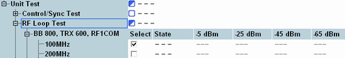
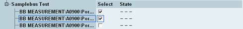
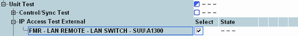
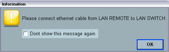

A unit test verifies that the communication between several internal modules of the instrument is uninterrupted. A passed unit test usually proves that several modules (e.g. boards and bus systems connecting these boards) work properly.
Unit tests and board tests A unit test represents an efficient method for testing the instrument's overall functioning. After a failed unit test, you can use one of the module tests to pin down the source of the malfunction. Some examples of unit tests are described below. |
A signal which is generated on a TRX module is routed to an RF connector and back to the TRX module. The main purpose of the test is to verify the connections between the TRX module and the frontend. The RF loop is measured at different frequencies and TX levels using an additional BB measurement module.
The header row of the overall loop test shows the output levels in dBm at the RF connectors. The actual measured levels are approximately 6 dB above the equivalent levels at the RF connectors.

A pseudo-random bit sequence (PRBS) is transferred over the sample bus between two hardware modules. The R&S CMW compares the transmitted PRBS with the received PRBS and verifies that no bit errors occur in the transmission path.

One or more R&S CMW connectors are tested using external cable connections. External tests require the "User (Extended)" mode; see "User Mode".

Note: The "IP Access Test External" shown above requires a subnet conform IP address for the "Lan Remote" network adapter; see "IP Subnet Configuration".
When the test is started, the R&S CMW prompts for the appropriate cable connection, e.g.:

A similar message ("Please disconnect...") is displayed after the test is finished.